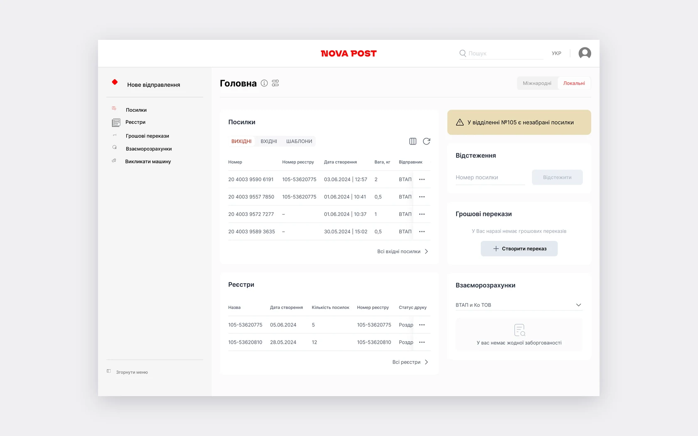
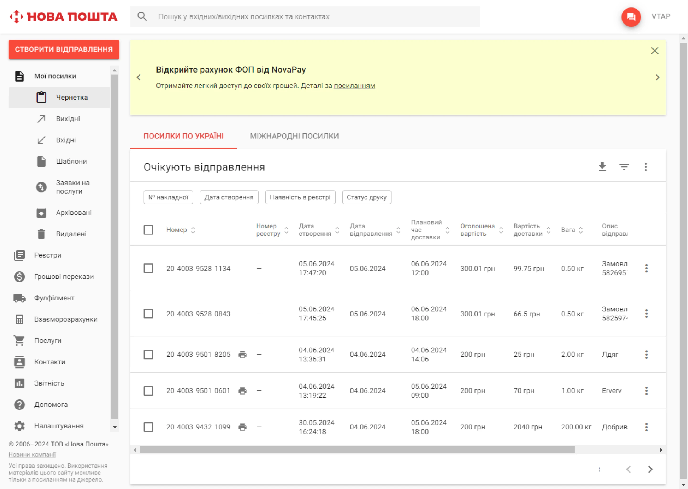
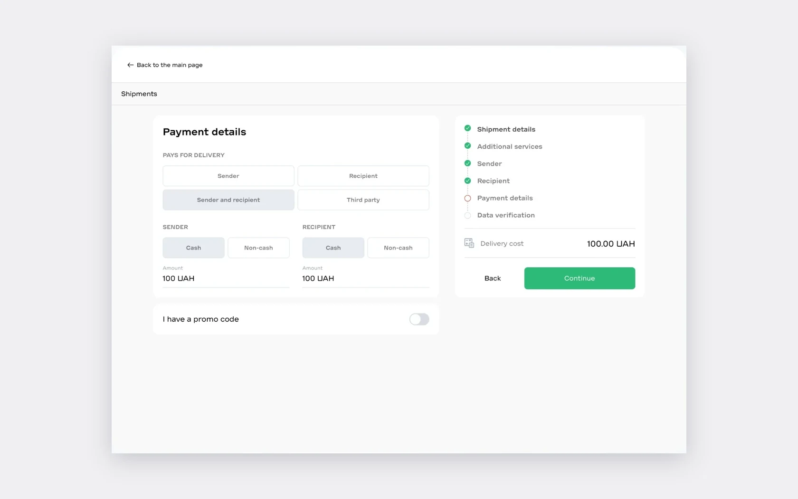
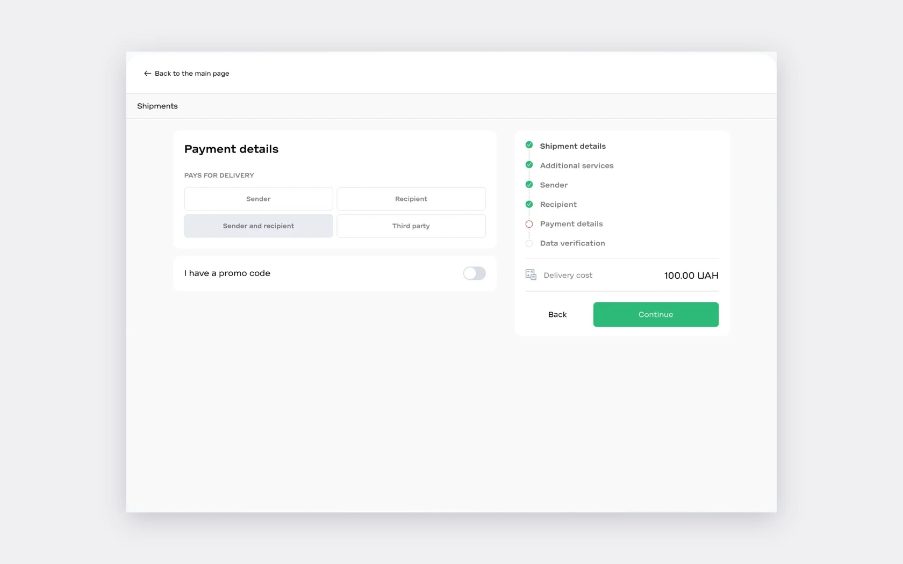
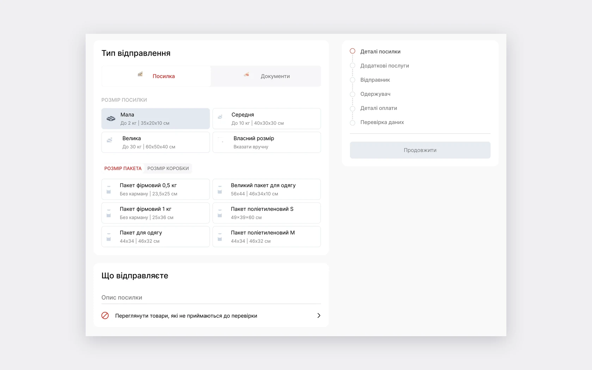
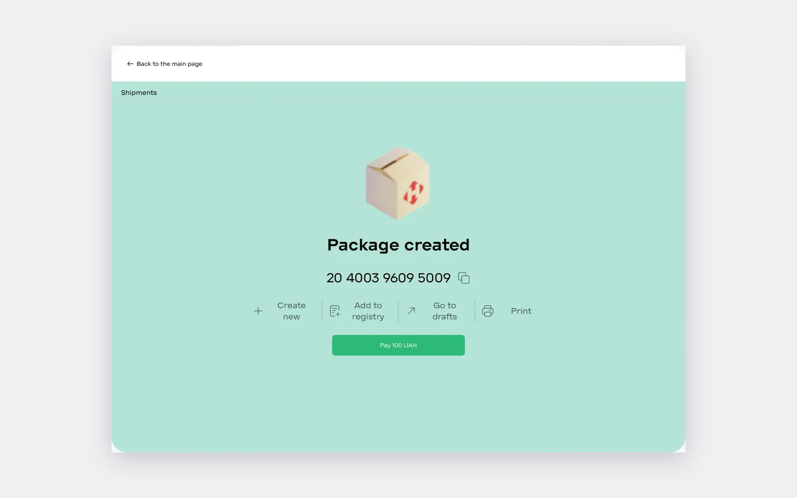
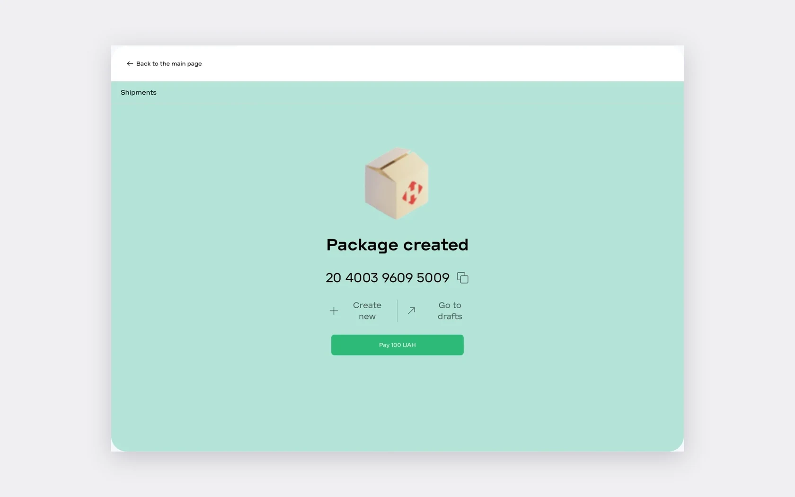
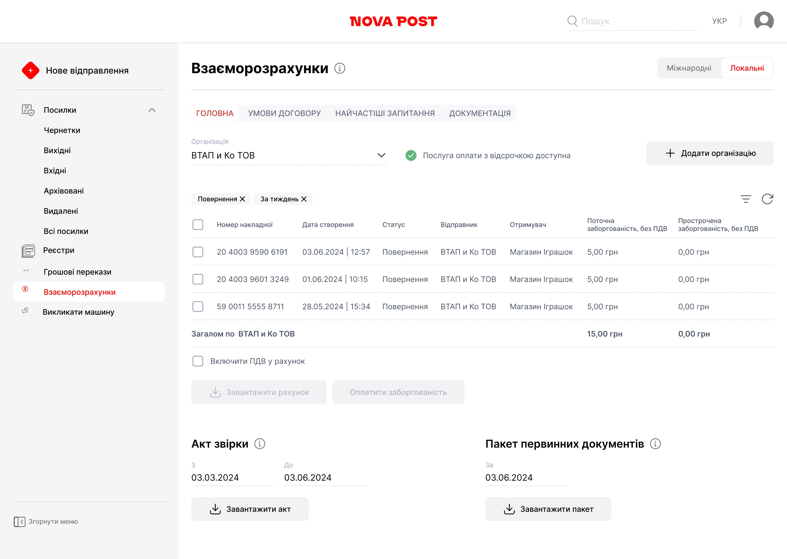

L’area business aveva due versioni: la vecchia più completa, la nuova più moderna. Non c’erano abbastanza informazioni sugli utenti per decidere cosa trasferire per primo.
Quattro settimane di Double Diamond: concorrenti, interviste, ipotesi e un sondaggio quantitativo, poi un prototipo hi-fi e i test. Un progetto per un cliente reale – Nova Poshta – svolto all’interno di un corso Projector, con il suo brief e il suo problema. Le decisioni e il prototipo sono il lavoro comune del team.
Il mio ruolo
Ho guidato un team di 4 designer e ho suddiviso il lavoro. Di cosa mi sono occupata io: interviste approfondite, generazione e validazione delle ipotesi, user flow e architettura dell’informazione, test con gli utenti, presentazione delle decisioni al cliente e presentazione finale.
- Interviste approfondite
- Generazione e validazione delle ipotesi
- User flow e architettura dell’informazione
- Test con gli utenti
- Presentazione delle decisioni al cliente
- Presentazione finale
Cosa ha mostrato la ricerca
L’analisi di SAT, UPS e di entrambe le versioni dell’area business ha dato due idee per il prototipo – una dashboard e il pagamento suddiviso. 6 interviste hanno fatto emergere oltre 20 pain point, e il sondaggio ha verificato quali contassero di più.
19 domande e 29 ipotesi: il sondaggio ha verificato i pain point emersi dalle interviste, così da decidere cosa fare per primo.
Vogliono promemoria sui pacchi non ritirati
→ soluzione 01: dashboardVogliono scegliere una busta o una scatola invece di inserire le dimensioni
→ soluzione 03Vogliono saldare il debito con un clic
→ soluzione 04Vogliono vedere una dashboard principale all’accesso
Lo stesso numero ha scelto le bozze – quindi abbiamo verificato la dashboard nei test → decisione 01Vogliono suddividere il pagamento tra mittente e destinatario
→ soluzione 02Dashboard al posto delle bozze
- Perché
- La vecchia versione si apriva sulle bozze, con pacchi, distinte, trasferimenti e debiti sparsi tra le sezioni. Il 70% degli intervistati vuole promemoria sui pacchi non ritirati, il 46.7% vuole una dashboard.
- Cosa abbiamo fatto
- Una dashboard come pagina principale – un’idea presa da UPS: pacchi, distinte, tracking, trasferimenti e saldi in un’unica schermata, con i promemoria sui pacchi non ritirati in alto.
- Risultato
- L’area business si apre su ciò che c’è da fare, non su un elenco di bozze.
Come abbiamo testatoLa dashboard è stata verificata nel primo scenario di test con 5 utenti.


Vecchia area businessPrototipoIl pagamento si può suddividere
- Perché
- Le aziende devono accordarsi con i clienti su chi paga la consegna, e l’area business non permetteva di suddividere il pagamento. Il 43.3% degli intervistati ha confermato questa esigenza.
- Cosa abbiamo fatto
- Nel passaggio «Payment details» il pagante può essere il mittente, il destinatario, entrambi o una terza parte – un’idea presa da SAT.
- Risultato
- Abbiamo aggiunto la scelta del metodo di pagamento per ciascun pagante.
Test e interventi successiviIl test del primo scenario ha mostrato la necessità di scegliere contanti o carta separatamente per ciascun pagante.


Prima dei testDopo i testBusta o scatola al posto delle dimensioni
- Perché
- Nelle interviste le persone si lamentavano di dover inserire le dimensioni a mano. Il 56.7% degli intervistati vuole scegliere una busta o una scatola.
- Cosa abbiamo fatto
- Formati standard e buste o scatole brandizzate tra cui scegliere, dimensioni personalizzate solo quando servono.
- Risultato
- Abbiamo aggiunto «Add to register» e «Print» alla schermata di pacco creato.
Test e interventi successiviIl test ha mostrato che dopo la creazione di un pacco mancavano le azioni successive.



Prima dei testDopo i testDebito corrente e pagamento con un clic
- Perché
- Il debito corrente era visibile solo il 1° del mese successivo e non si poteva pagare con IVA nell’area business. Il 46.7% degli intervistati vuole il pagamento con un clic.
- Cosa abbiamo fatto
- In «Settlements» il debito corrente e quello scaduto sono mostrati per ogni lettera di vettura, il totale si paga con un solo pulsante e l’IVA si può includere in fattura.
- Risultato
- Il debito è visibile in qualsiasi momento, non una volta al mese.
Come abbiamo testatoLo scenario di pagamento del debito è stato verificato nei test con gli utenti.

Prototipo hi-fi
Dalla vecchia area business al pagamento di una spedizione
Il prototipo della nuova area business in Figma: passaggio dalla vecchia versione, creazione di una spedizione con filiali a Kyiv e Lviv, pagamento e bozze. Scorre in automatico; passa a «Provalo tu» per navigarlo cliccando.
- Passaggio alla nuova area business
- Pagina principale
- Dettagli della spedizione
- Servizi aggiuntivi
- Mittente
- Destinatario
- Dettagli del pagamento
- Verifica dei dati
- Spedizione creata
- Pagamento
- Bozze
Cosa abbiamo consigliato come passi successivi
Il sondaggio ha confermato alcune ipotesi che non sono entrate nel prototipo – le abbiamo presentate a parte, insieme a un elenco di funzioni della vecchia versione da trasferire per prime.